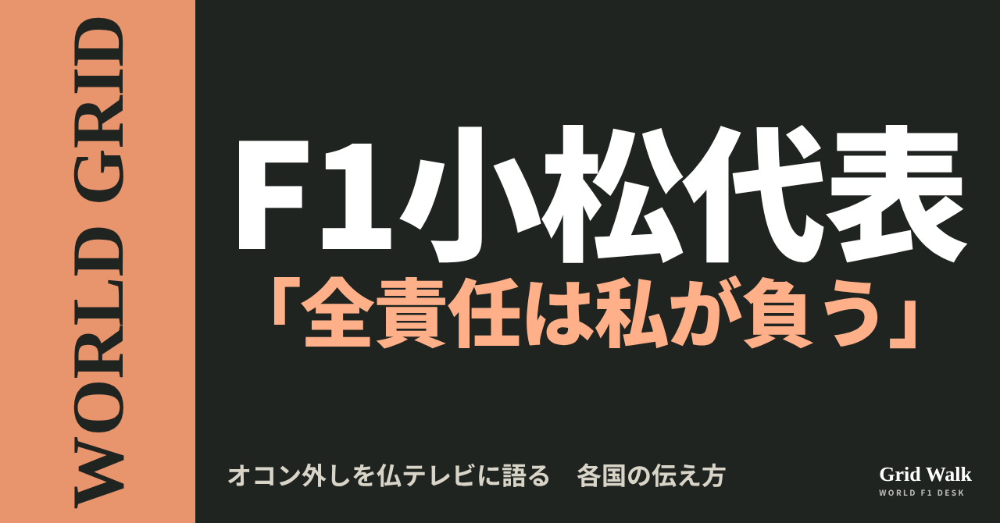
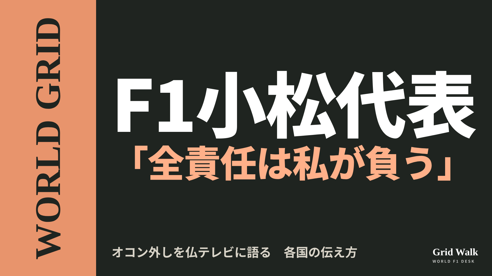
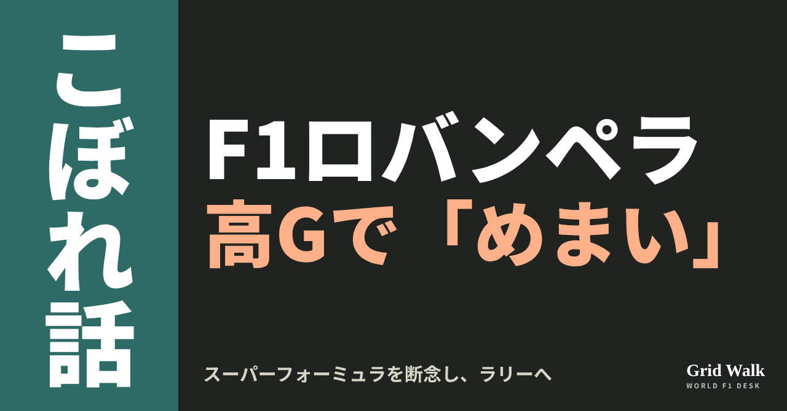
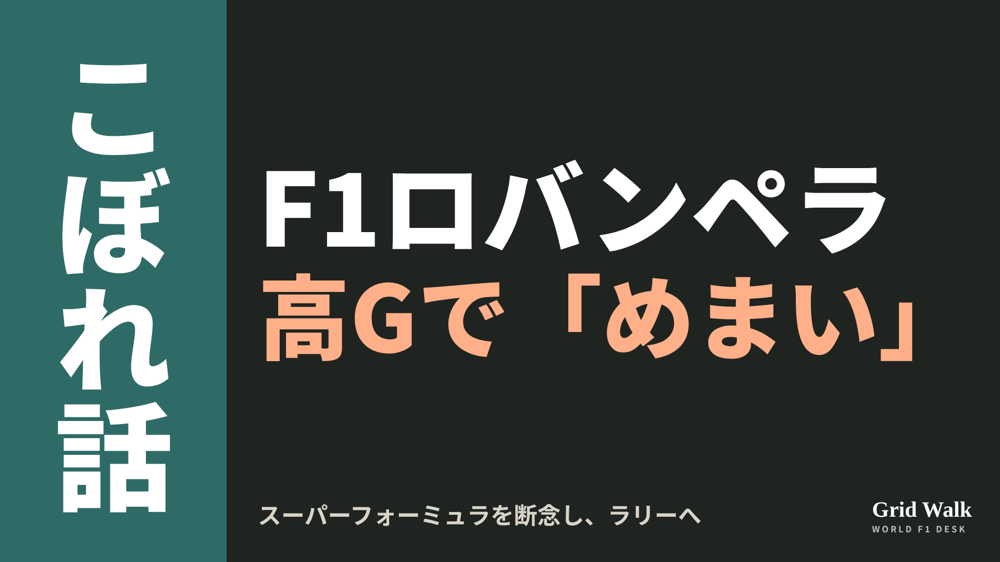
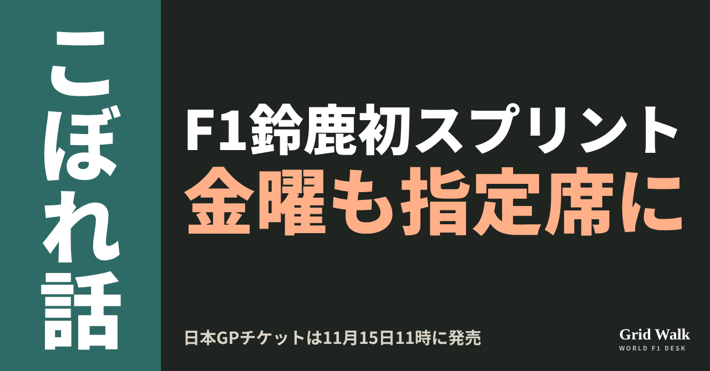
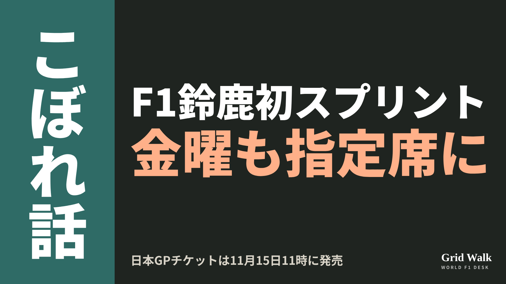
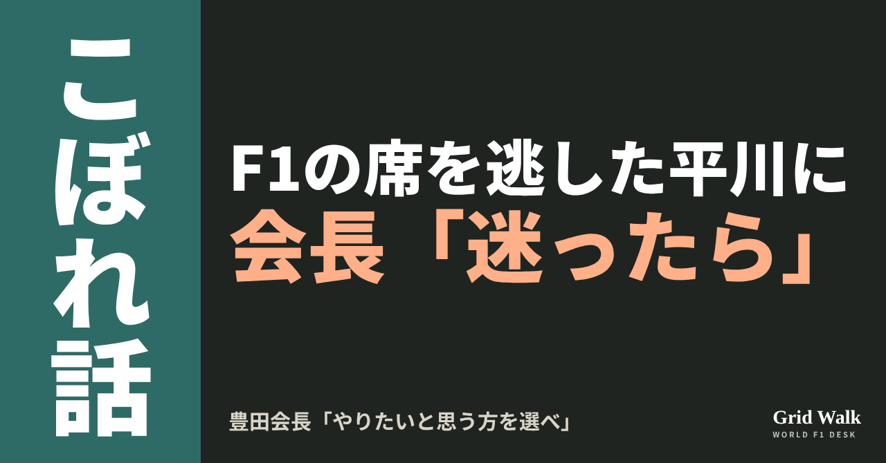
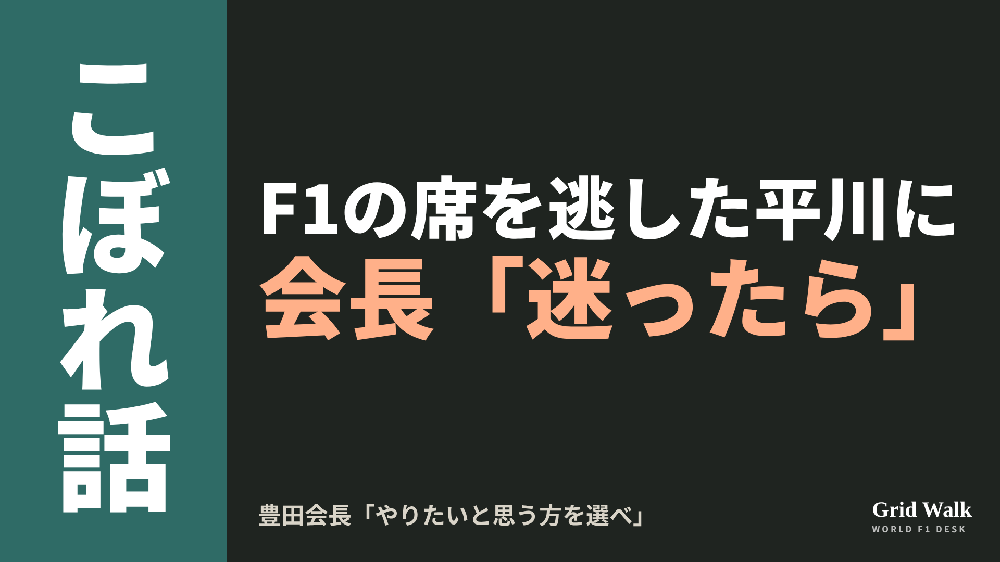

<meta charset="utf-8"><title>11/3夜のコラム note貼り付け</title>
<style>
/* one column of numbered paste steps; text steps vs image steps differ by marker */
:root{--bg:#F5F4F0;--card:#FFFFFF;--ink:#1D2321;--mute:#5F665F;--line:#DCDAD2;--btn:#1F5FBF;--btnok:#2E8B4F;--img:#E9F3EC;--imgink:#22663B;--sans:'IBM Plex Sans JP','Hiragino Sans','Noto Sans JP',sans-serif}
@media (prefers-color-scheme:dark){:root:not([data-theme="light"]){--bg:#171A19;--card:#202423;--ink:#ECEDE8;--mute:#A3AAA2;--line:#343937;--btn:#4D8BE6;--btnok:#3FA866;--img:#1E2C23;--imgink:#8FD3A6;color-scheme:dark}}
:root[data-theme="dark"]{--bg:#171A19;--card:#202423;--ink:#ECEDE8;--mute:#A3AAA2;--line:#343937;--btn:#4D8BE6;--btnok:#3FA866;--img:#1E2C23;--imgink:#8FD3A6;color-scheme:dark}
body{background:var(--bg);color:var(--ink);font-family:var(--sans);font-size:15px;line-height:1.75;padding:20px 16px 60px}
main{max-width:680px;margin:0 auto;display:grid;gap:28px}
header h1{font-size:22px;margin:0 0 6px;text-wrap:balance}
header p{margin:0;color:var(--mute);font-size:14px}
nav{display:flex;gap:8px;flex-wrap:wrap;margin-top:12px}
nav a{border:1px solid var(--line);border-radius:999px;padding:4px 14px;color:var(--ink);text-decoration:none;font-size:14px;background:var(--card)}
.part h2{font-size:18px;line-height:1.5;margin:0 0 12px;text-wrap:balance;display:flex;gap:10px;align-items:baseline;flex-wrap:wrap}
.tag{font-size:13px;background:var(--ink);color:var(--bg);border-radius:6px;padding:1px 9px}
.steps{list-style:none;margin:0;padding:0;display:grid;gap:12px}
.st{background:var(--card);border:1px solid var(--line);border-radius:12px;padding:12px;min-width:0}
.hd{display:flex;align-items:center;gap:8px;margin-bottom:8px}
.no{width:26px;height:26px;border-radius:50%;background:var(--btn);color:#fff;display:inline-flex;align-items:center;justify-content:center;font-size:13px;font-weight:700;flex:0 0 26px}
.im .no{background:var(--btnok)}
.hd em{font-style:normal;font-size:12px;background:var(--img);color:var(--imgink);border-radius:6px;padding:0 8px}
.bx{font-size:13.5px;line-height:1.7;border:1px solid var(--line);border-radius:8px;padding:8px 10px;max-height:110px;overflow:auto;overflow-wrap:anywhere}
.bx.tall{max-height:150px}.bx p{margin:0 0 6px}.bx h2{font-size:14px;margin:8px 0 4px}.bx a{color:var(--btn)}
.st img{display:block;width:100%;max-width:100%;border:1px solid var(--line);border-radius:8px}
.sub{font-size:12.5px;color:var(--mute);margin:6px 0 0}
.cp{width:100%;margin-top:8px;padding:12px;border:0;border-radius:10px;background:var(--btn);color:#fff;font:600 15px var(--sans);cursor:pointer}
.cp.ok{background:var(--btnok)}.cp.dl{background:var(--btnok)}.cp:focus-visible{outline:3px solid var(--ink);outline-offset:2px}
.xh{font-size:15px;margin:20px 0 10px}
.fb{font-size:13px;line-height:1.7;margin:8px 0 0;padding:8px 10px;border-radius:8px;background:var(--img);color:var(--imgink)}
.opts{display:grid;grid-template-columns:repeat(auto-fill,minmax(240px,1fr));gap:10px}
.opt{min-width:0}.opt img{display:block;width:100%;border:1px solid var(--line);border-radius:8px}
.ol{display:flex;align-items:center;gap:8px;margin-top:6px}.ol b{font-size:13px;flex:0 0 auto}.ol .on{font-size:12.5px;color:var(--mute);flex:1;min-width:0}.ol .cp{width:auto;flex:0 0 auto;padding:9px 14px}.ol .cp{margin:0;padding:9px}
.toast{font-size:13px;color:var(--mute);margin-top:6px}
</style>
<main><header><h1>11/3夜のコラム note貼り付け</h1><p>いま公開済みは4本です。青い番号は文章、緑は画像です。</p><nav><a href="#p1">1</a><a href="#p2">2</a><a href="#p3">3</a><a href="#p4">4</a></nav></header><section class="part" id="p1"><h2><span class="tag">WORLD GRID</span>小松代表「全責任は私が負う」　オコン外しを仏テレビに語る</h2><p class="sub">サイトに公開：19:16</p><ol class="steps">
<li class="st im"><div class="hd"><span class="no">1</span><b>見出し画像</b><em>画像</em></div><button class="cp dl" data-img="img/komatsu-ocon-decision-20261103.png" data-name="komatsu-ocon-decision-20261103_見出し画像.png">ダウンロード</button></li>
<li class="st"><div class="hd"><span class="no">2</span><b>タイトル</b></div><div class="bx" id="p1t">小松代表「全責任は私が負う」　オコン外しを仏テレビに語る</div><button class="cp" data-plain="p1t">タイトルをコピー</button></li>
<li class="st"><div class="hd"><span class="no">3</span><b>本文</b></div><div class="bx tall" id="p1r"><p>「全責任は私が負います」。メキシコシティGPでエステバン・オコンを外したハースの小松礼雄代表が、フランスのテレビ局Canal+の取材にこう話しました。理由は語らないまま、「取れる決定はこれしかない」と確信していた、と言い切りました。国ごとに、見出しにした部分が違います。</p><p>小松代表の発言を各国がどう伝えたかと、元の記事へのリンクはサイトで → <a href="https://f1gridwalk.github.io/lens/komatsu-ocon-decision-20261103/?utm_source=note&amp;utm_campaign=komatsu-ocon-decision-20261103">https://f1gridwalk.github.io/lens/komatsu-ocon-decision-20261103/?utm_source=note&amp;utm_campaign=komatsu-ocon-decision-20261103</a></p><h2>フランス：「軽い気持ちで下す決定ではない」</h2><p>フランスのAutoHebdoは「私が取れる決定はこれしかなかった」という見出しで、小松代表がCanal+に話した言葉を伝えました。</p><blockquote><p>「正直に言って、詳しいことには立ち入りたくありません」「すべての要素を考えれば、彼を替えるという決定はチームにとって正しいものだったと思います」（小松礼雄代表、Canal+。AutoHebdo／フランス）</p></blockquote><blockquote><p>「重い決定です。大きな結果を伴い、影響も大きい」「軽い気持ちで下す決定ではありません。でも同時に、取れる決定はこれしかないと確信していました」（小松礼雄代表、Canal+。AutoHebdo、Nextgen-Auto／フランス）</p></blockquote><p>AutoHebdoによると、チームオーナーのジーン・ハースもこの週末はメキシコにいて、相談を受けましたが、最終的に決めたのは小松代表でした。本人はこう話しています。</p><blockquote><p>「ジーンには、これまでも今も支えてもらっていて、とても感謝しています」「それから、ジーンは私に決めさせてくれました。ですから、その全責任は私が負います」（小松礼雄代表、Canal+。AutoHebdo、Nextgen-Auto／フランス）</p></blockquote><p>次のサンパウロGPについて、小松代表は踏み込みませんでした（AutoHebdo）。</p><blockquote><p>「今のところ、決めたのはこの週末についてだけです」（小松礼雄代表、Canal+。AutoHebdo／フランス）</p></blockquote><p>いつか事情が明かされるのかについては、「正直、分かりません。今言えることではありません」と話しています（AutoHebdo）。</p><h2>オランダは「ジーン」、ブラジルはインテルラゴス</h2><p>オランダのGPblogは同じ発言を、「小松、オコン外しの全責任を負う　『ジーンが私に決めさせてくれた』」という見出しで伝えました。記事は、インテルラゴスでもう1台に誰を乗せるかは、まだ決まっていない、とも書いています。</p><p>ブラジルのGrande Prêmio（英語版）は、Canal+の取材より前の土曜の時点で、「小松代表、オコンのメキシコGP欠場で沈黙を破るも、決定の説明は拒む」と見出しを立て、インテルラゴスに目を向けていました。2027年からハースに乗るラファエル・カマラのスーパーライセンスポイントは、Grande Prêmioの計算では62点で、FIAが求める40点を上回っているとしつつ、ハースはデビューを早める計画を発表していない、と書いています。</p><h2>タブロイド紙の報道と、オコンの否定</h2><p>同じころ広がったのが、ドイツのタブロイド紙ビルトの報道です。イギリスのGrandPrix.comによると、ビルトは、話し合いの場を離れようとした小松代表の肩をオコンがつかんだ、と報じました。GrandPrix.comは、この話は独自に確かめられておらず、ハースもこの報道を認めていないと書いています。フランスのNextgen-Autoも同じ報道を見出しで「新たな告発」として伝え、確認されていないこと、オコンがすでに身体的な暴力をきっぱり否定していることを書き添えました。</p><p>GrandPrix.comの見出しは「オコン、小松との身体的な衝突を否定」。オコンは暴力を否定する声明で、こうも述べています。</p><blockquote><p>「あらゆる形の暴力を強く非難します」（オコンの声明、GrandPrix.com／イギリス）</p></blockquote><p>オコンの声明と、各国の最初の伝え方は、11月1日のコラム（https://f1gridwalk.github.io/lens/ocon-haas-exit-20261101/）で取り上げました。</p><p>サンパウロGP（11月6〜8日）のドライバーを、ハースは11月3日夕方の時点でまだ発表していません。</p><p>編集部としては、小松代表は理由を語らない代わりに、決めたのは自分だとはっきりさせた、と見ています。何があったのか、詳しい中身はまだ明かされていません。</p><p><strong>理由は語らず、「全責任は私が負う」。この言い方を、あなたはどう受け止めますか？</strong></p><p>━━━━━━━━━━</p><p><strong>F1 Grid Walk では、世界のF1ニュースを毎日日本語でまとめています。</strong></p><p>海外の記事の要約を、毎日載せています。</p><p><a href="https://f1gridwalk.github.io/">https://f1gridwalk.github.io/</a></p><p>ほかの海外記事も読みたい方は、F1 Grid Walkへ。</p><p><a href="https://f1gridwalk.github.io/lens/komatsu-ocon-decision-20261103/">https://f1gridwalk.github.io/lens/komatsu-ocon-decision-20261103/</a></p><p>━━━━━━━━━━</p><p><a href="https://www.autohebdof1.com/news/f1/Ayao-Komatsu--after-Steban-Ocon&#x27;s-dismissal--it-was-the-only-decision-I-could-make.html">出典：AutoHebdo（フランス）</a></p><p><a href="https://motorsport.nextgen-auto.com/fr/formule-1/ocon-haas-f1-de-nouvelles-accusations-emergent-sur-l-altercation-avec-komatsu,212988.html">出典：Nextgen-Auto（フランス）</a></p><p><a href="https://www.gpblog.com/en/news/komatsu-takes-full-responsibility-for-dropping-ocon-gene-let-me-decide">出典：GPblog（オランダ）</a></p><p><a href="https://grandepremio.com/en/f1/haas-boss-komatsu-breaks-silence-on-ocons-mexican-gp-withdrawal-but-refuses-to-explain-decision/">出典：Grande Prêmio（英語版）（ブラジル）</a></p><p><a href="https://www.grandprix.com/news/ocon-denies-physical-confrontation-with-komatsu.html">出典：GrandPrix.com（イギリス）</a></p></div><button class="cp" data-rich="p1r">本文をコピー</button></li>
<li class="st"><div class="hd"><span class="no">4</span><b>ハッシュタグ</b></div><div class="bx" id="p1h">#F1 #F1jp #小松礼雄 #ハース #オコン #メキシコシティGP #サンパウロGP #F1ニュース #WORLDGRID</div><button class="cp" data-plain="p1h">タグをコピー</button></li>
</ol><h3 class="xh">X</h3><ol class="steps">
<li class="st im"><div class="hd"><b>X用の画像</b><em>画像</em></div><button class="cp dl" data-img="img/x_komatsu-ocon-decision-20261103.png" data-name="x_komatsu-ocon-decision-20261103.png">ダウンロード</button></li>
<li class="st"><div class="hd"><b>① noteをシェアするときの文</b></div><div class="bx" id="p1x0">ハースの小松礼雄代表が、オコンを外した判断について仏テレビで「これしかなかった」「全責任は私が負う」。フランス、オランダ、イギリスの伝え方をnoteにまとめました #F1jp #小松礼雄</div><button class="cp" data-plain="p1x0">コピー</button></li>
<li class="st"><div class="hd"><b>② ①への返信</b></div><div class="bx" id="p1x1">ほかの海外記事も読みたい方は、F1 Grid Walkへ。
https://f1gridwalk.github.io/lens/komatsu-ocon-decision-20261103/?utm_source=x&amp;utm_campaign=komatsu-ocon-decision-20261103</div><button class="cp" data-plain="p1x1">コピー</button></li>
<li class="st"><div class="hd"><b>③ ②への返信</b></div><div class="bx" id="p1x2">毎日の海外F1ニュースは、日本語でこちらにまとめています。
https://f1gridwalk.github.io/</div><button class="cp" data-plain="p1x2">コピー</button></li>
</ol></section><section class="part" id="p2"><h2><span class="tag">OFF GRID</span>ロバンペラ、高Gで「めまい」　スーパーフォーミュラ断念し、ラリーへ</h2><p class="sub">サイトに公開：19:16</p><ol class="steps">
<li class="st im"><div class="hd"><span class="no">1</span><b>見出し画像</b><em>画像</em></div><button class="cp dl" data-img="img/rovanpera-vertigo-20261103.png" data-name="rovanpera-vertigo-20261103_見出し画像.png">ダウンロード</button></li>
<li class="st"><div class="hd"><span class="no">2</span><b>タイトル</b></div><div class="bx" id="p2t">ロバンペラ、高Gで「めまい」　スーパーフォーミュラ断念し、ラリーへ</div><button class="cp" data-plain="p2t">タイトルをコピー</button></li>
<li class="st"><div class="hd"><span class="no">3</span><b>本文</b></div><div class="bx tall" id="p2r"><p>「高いGのコーナーで、公に言われていたより多く、めまいがありました」。WRCで2度王者になったカッレ・ロバンペラが、ラリーの専門メディアDirtFishにそう話しました。F1を遠い目標に、日本のスーパーフォーミュラを選んだ道は、体調の問題で止まりました。11月3日、トヨタは2027年のWRCの体制を発表し、ロバンペラは一部のラリーで戻ってきます。</p><p>DirtFish、WRC公式、Motorsport-Total.com、GrandPrix.comの元の記事4本へのリンクはサイトで → <a href="https://f1gridwalk.github.io/lens/rovanpera-vertigo-20261103/?utm_source=note&amp;utm_campaign=rovanpera-vertigo-20261103">https://f1gridwalk.github.io/lens/rovanpera-vertigo-20261103/?utm_source=note&amp;utm_campaign=rovanpera-vertigo-20261103</a></p><h2>F1は、その先の目標だった</h2><p>GrandPrix.com（10月14日）によると、ロバンペラは2025年を最後にWRCのフル参戦を離れ、サーキットのレースへ向かいました。GrandPrix.comは、F1をその先の遠い目標と書いています。舞台に選んだのが、日本のスーパーフォーミュラです。</p><p>ただ、スーパーフォーミュラの計画は途中で止まり、ロバンペラは3月にその予定から身を引きました（GrandPrix.com）。ドイツのMotorsport-Total.comは、病気のためにスーパーフォーミュラへの移行を取りやめなければならなかった、と伝えています。</p><h2>「自分ではどうにもできないこと」</h2><p>11月3日のDirtFishで、ロバンペラは単座のレースへの挑戦をこう振り返りました。</p><blockquote><p>「ラリーをやらない計画だったのだから、何かに失敗したということです。……高いGのコーナーで、公に言われていたより多くめまいがあった。それも、自分ではどうにもできないことです」（ロバンペラ、DirtFish／アメリカ）</p></blockquote><blockquote><p>「だから、本当に残念だけれど、自分としてはまったく平気です。自分では変えられないことなら、それ以上できることはあまりありません」（同）</p></blockquote><p>モータースポーツでは静かな1年になった2026年は、本人いわく「自分にとってのすばらしいリセット」だったそうです（DirtFish）。</p><blockquote><p>「ラリーは人生の大きな一部でした。もちろん、しばらくすると運転が恋しくなりました」（ロバンペラ、Motorsport-Total.com／ドイツ）</p></blockquote><p>体が戻ってから、トヨタは開発中の車でのテスト走行を用意しました（Motorsport-Total.com）。スペインで2027年の開発車に乗ったあと、トヨタとの話し合いが始まっていました（GrandPrix.com）。</p><h2>セリカが戻り、6人の体制に</h2><p>WRC公式によると、トヨタは2027年、2チームで2種類の車を走らせます。TOYOTA Racingは新しいGRセリカ・ラリー1で、王者エルフィン・エバンス、オリバー・ソルベルグ、サミ・パヤリ。GAZOO Racing TOYOTAは新しいGRヤリス・ラリー1で、オット・タナク、勝田貴元、そして一部のラリーに出るロバンペラです。1つのラリーに最大6台のワークスカーを出す計画です。</p><p>セリカは、1990年と1992年にドライバーズタイトルを取った車の名前です（WRC公式）。タナクは2019年にトヨタで王者になったドライバーです（WRC公式）。勝田は2026年、ケニアのサファリ・ラリーで初優勝し、クロアチアで2勝目を挙げ、日本人ドライバーとして初めてWRCの総合首位にも立ちました（WRC公式、Motorsport-Total.com）。</p><p>2027年のタイトルについては、こう話しています。</p><blockquote><p>「選手権は狙いにいくものだと思います。でも、もう2つ持っているので、それだけが目標ではありません」（ロバンペラ、DirtFish／アメリカ）</p></blockquote><p>編集部としては、日本のスーパーフォーミュラを選んだ王者が、来年は勝田と同じチームで走ることに注目しています。</p><p><strong>F1を遠い目標に日本のスーパーフォーミュラを選び、ラリーに戻るロバンペラ。2027年、勝田と同じチームの彼に、どのラリーで会いたいですか？</strong></p><p>━━━━━━━━━━</p><p><strong>F1 Grid Walk では、世界のF1ニュースを毎日日本語でまとめています。</strong></p><p>海外の記事の要約を、毎日載せています。</p><p><a href="https://f1gridwalk.github.io/">https://f1gridwalk.github.io/</a></p><p>ほかの海外記事も読みたい方は、F1 Grid Walkへ。</p><p><a href="https://f1gridwalk.github.io/lens/rovanpera-vertigo-20261103/">https://f1gridwalk.github.io/lens/rovanpera-vertigo-20261103/</a></p><p>━━━━━━━━━━</p><p><a href="https://dirtfish.com/rally/wrc/rovanpera-completely-fine-with-single-seater-failure/">出典：DirtFish（アメリカ）</a></p><p><a href="https://www.wrc.com/en/news/taenak-and-rovanperae-return-as-toyota-revives-celica-for-2027">出典：WRC公式（国際）</a></p><p><a href="https://www.motorsport-total.com/wrc/news/ott-taenak-und-kalle-rovanperae-zurueck-toyota-enthuellt-sein-wrc-aufgebot-2027-26110301">出典：Motorsport-Total.com（ドイツ）</a></p><p><a href="https://www.grandprix.com/news/rovanpera-opens-talks-with-toyota-over-wrc-return.html">出典：GrandPrix.com（イギリス）</a></p></div><button class="cp" data-rich="p2r">本文をコピー</button></li>
<li class="st"><div class="hd"><span class="no">4</span><b>ハッシュタグ</b></div><div class="bx" id="p2h">#F1 #F1jp #ロバンペラ #スーパーフォーミュラ #WRC #トヨタ #勝田貴元 #GRセリカ #F1こぼれ話 #OFFGRID</div><button class="cp" data-plain="p2h">タグをコピー</button></li>
</ol><h3 class="xh">X</h3><ol class="steps">
<li class="st im"><div class="hd"><b>X用の画像</b><em>画像</em></div><button class="cp dl" data-img="img/x_rovanpera-vertigo-20261103.png" data-name="x_rovanpera-vertigo-20261103.png">ダウンロード</button></li>
<li class="st"><div class="hd"><b>① noteをシェアするときの文</b></div><div class="bx" id="p2x0">WRC王者ロバンペラが、スーパーフォーミュラでの挑戦を振り返り「高Gのコーナーでめまいがあった」。2027年はトヨタで一部のラリーへ。noteにまとめました #F1jp #スーパーフォーミュラ</div><button class="cp" data-plain="p2x0">コピー</button></li>
<li class="st"><div class="hd"><b>② ①への返信</b></div><div class="bx" id="p2x1">ほかの海外記事も読みたい方は、F1 Grid Walkへ。
https://f1gridwalk.github.io/lens/rovanpera-vertigo-20261103/?utm_source=x&amp;utm_campaign=rovanpera-vertigo-20261103</div><button class="cp" data-plain="p2x1">コピー</button></li>
<li class="st"><div class="hd"><b>③ ②への返信</b></div><div class="bx" id="p2x2">毎日の海外F1ニュースは、日本語でこちらにまとめています。
https://f1gridwalk.github.io/</div><button class="cp" data-plain="p2x2">コピー</button></li>
</ol></section><section class="part" id="p3"><h2><span class="tag">OFF GRID</span>鈴鹿初スプリントで金曜も指定席に　11月15日発売の日本GPチケット</h2><p class="sub">サイトに公開：19:16</p><ol class="steps">
<li class="st im"><div class="hd"><span class="no">1</span><b>見出し画像</b><em>画像</em></div><button class="cp dl" data-img="img/suzuka-sprint-tickets-20261103.png" data-name="suzuka-sprint-tickets-20261103_見出し画像.png">ダウンロード</button></li>
<li class="st"><div class="hd"><span class="no">2</span><b>タイトル</b></div><div class="bx" id="p3t">鈴鹿初スプリントで金曜も指定席に　11月15日発売の日本GPチケット</div><button class="cp" data-plain="p3t">タイトルをコピー</button></li>
<li class="st"><div class="hd"><span class="no">3</span><b>本文</b></div><div class="bx tall" id="p3r"><p>2027年の日本GP（4月9〜11日）は、鈴鹿で初めてのスプリント週末になります。チケットは11月15日（日）11時に、公式オンラインショップ「MobilityStation」で発売。金曜も指定席になるなど、席のルールも変わります。新しくできるラウンジはR席の観戦券付きで、休むスペースからはコースが見えず、レースはR席で見る形です。</p><p>鈴鹿サーキット公式の変更点ページとF1公式の元の記事、スプリント週末の解説へのリンクはサイトで → <a href="https://f1gridwalk.github.io/lens/suzuka-sprint-tickets-20261103/?utm_source=note&amp;utm_campaign=suzuka-sprint-tickets-20261103">https://f1gridwalk.github.io/lens/suzuka-sprint-tickets-20261103/?utm_source=note&amp;utm_campaign=suzuka-sprint-tickets-20261103</a></p><p>鈴鹿サーキットの発表をCar Watchが伝えたところでは、2026年の大会には3日間で31万5000人が来場し、2009年以来の最多でした。</p><h2>金曜から「本番」が始まる</h2><p>鈴鹿サーキット公式によると、スプリントの週末は、金曜にスプリント予選、土曜にスプリントと決勝グリッドを決める予選、日曜に決勝です。F1公式によると、練習走行は1時間の1回だけ。スプリントは100km余りで、ふつうのグランプリの約3分の1の距離です。</p><p>F1公式は、2027年はバーレーン、オーストラリア、日本などが初めてスプリントを開き、シーズンは「最初の4週末で3回のスプリント」で始まると書いています。開催地はルールブック（https://f1gridwalk.github.io/deep/rules/sprint-venue/ ）、週末の流れは https://f1gridwalk.github.io/deep/rules/race-weekend-format/ 、初めてのスプリントで何が変わるかはシンガポールの解説（https://f1gridwalk.github.io/deep/singapore-sprint/ ）で。</p><p>金曜の席のルールも変わります。これまで一部のスタンド・席を除いて自由席だった金曜日が、土日と同じ指定席になり、指定席は金〜日の3日間有効になります。一方で、木・金曜日券と西エリア券の人は西エリアでの観戦になる、と公式は案内しています。G席には、西エリア券で入れるエリアが加わります。</p><h2>「ウルトラ」な席と、コースが見えないラウンジ</h2><p>新しく設ける区分が「ウルトラアウトレットシート」。公式によると、これまで販売していなかったエリアを使う席で、説明はこうです。</p><blockquote><p>「視界に制限があるお席ではありますが、サーキットの熱気やレースの迫力を間近に感じていただける観戦席です」（鈴鹿サーキット公式サイト／日本）</p></blockquote><p>公式サイトの表では、V1、A1、B1、C、D、Sの各席にこの区分があります。</p><p>もう一つの新顔が「Ferris Wheel Lounge」。最終コーナー近くのFERRIS WHEEL FANZONEにできるホスピタリティスペースで、R席の観戦券が付きます。料金表では3歳以上共通で60万円。公式サイトには「Ferris Wheel Loungeのホスピタリティスペースからコースはご覧いただけません」と注意書きがあり、レースは付いてくるR席で見る形です。</p><h2>D席・E席は、柵で見え方が変わる</h2><p>安全のため、コースと観戦席の間の防護柵（デブリフェンス）の一部が新しくなります。高さが変わるところもあり、D席・E席など一部の席から、コースの見え方が変わると公式は説明しています。例として、D席のAHブロック10列付近からNIPPOコーナー方向とS字方向、E-2席のMブロック17列付近からNIPPOコーナー方向、Nブロック7列付近から逆バンク方向の眺めが載っています。</p><p>仮設スタンドが増えるため、D席はD-1〜D-8、E席はE-1〜E-6、M席はM-1〜M-3に名前が変わります。V2、I、O、P、Q1席も区分を見直します。</p><p>カメラマンエリア券も変わります。デジカメ Watchによると、券はエリア1〜5の5種類になり、D-5エリアの常設最上段席はなくなります。公式の料金表では6万8000円からです。また、発売日の仮想待合室は、使う前にMobilityStationへのログインが必要になります。料金や席の条件は鈴鹿サーキットの公式サイトにあります。</p><p>編集部としては、スプリントで金曜の意味が変わったことが、今回のチケットのいちばん大きな変化だと見ています。</p><p><strong>鈴鹿で初めてのスプリント週末。あなたなら、金曜のスプリント予選から行きますか？ それとも日曜の決勝の日だけですか？</strong></p><p>━━━━━━━━━━</p><p><strong>F1 Grid Walk では、世界のF1ニュースを毎日日本語でまとめています。</strong></p><p>海外の記事の要約を、毎日載せています。</p><p><a href="https://f1gridwalk.github.io/">https://f1gridwalk.github.io/</a></p><p>ほかの海外記事も読みたい方は、F1 Grid Walkへ。</p><p><a href="https://f1gridwalk.github.io/lens/suzuka-sprint-tickets-20261103/">https://f1gridwalk.github.io/lens/suzuka-sprint-tickets-20261103/</a></p><p>━━━━━━━━━━</p><p><a href="https://car.watch.impress.co.jp/docs/news/2143002.html">出典：Car Watch（日本）</a></p><p><a href="https://dc.watch.impress.co.jp/docs/news/event/2142950.html">出典：デジカメ Watch（日本）</a></p><p><a href="https://www.suzukacircuit.jp/f1/change.html">出典：鈴鹿サーキット公式（日本）</a></p><p><a href="https://www.suzukacircuit.jp/f1/ticket/index.html">出典：鈴鹿サーキット公式（日本）</a></p><p><a href="https://www.formula1.com/en/latest/article/whats-new-with-the-f1-sprint-in-2027.6UiqFIVYRoMSgPvAA8yiiZ">出典：F1公式（イギリス）</a></p><p><a href="https://www.formula1.com/en/latest/article/formula-1-reveals-calendar-for-2027-season-with-10-sprint-events.5J8ePLyjRuMyWEIDNUKgY4">出典：F1公式（イギリス）</a></p></div><button class="cp" data-rich="p3r">本文をコピー</button></li>
<li class="st"><div class="hd"><span class="no">4</span><b>ハッシュタグ</b></div><div class="bx" id="p3h">#F1 #F1jp #日本GP #鈴鹿サーキット #スプリント #F1チケット #F1観戦 #F1こぼれ話 #OFFGRID</div><button class="cp" data-plain="p3h">タグをコピー</button></li>
</ol><h3 class="xh">X</h3><ol class="steps">
<li class="st im"><div class="hd"><b>X用の画像</b><em>画像</em></div><button class="cp dl" data-img="img/x_suzuka-sprint-tickets-20261103.png" data-name="x_suzuka-sprint-tickets-20261103.png">ダウンロード</button></li>
<li class="st"><div class="hd"><b>① noteをシェアするときの文</b></div><div class="bx" id="p3x0">2027年の日本GPは鈴鹿で初めてのスプリント。金曜も指定席になり、チケットは11月15日11時に発売。変わる点をnoteにまとめました #F1jp #鈴鹿</div><button class="cp" data-plain="p3x0">コピー</button></li>
<li class="st"><div class="hd"><b>② ①への返信</b></div><div class="bx" id="p3x1">ほかの海外記事も読みたい方は、F1 Grid Walkへ。
https://f1gridwalk.github.io/lens/suzuka-sprint-tickets-20261103/?utm_source=x&amp;utm_campaign=suzuka-sprint-tickets-20261103</div><button class="cp" data-plain="p3x1">コピー</button></li>
<li class="st"><div class="hd"><b>③ ②への返信</b></div><div class="bx" id="p3x2">毎日の海外F1ニュースは、日本語でこちらにまとめています。
https://f1gridwalk.github.io/</div><button class="cp" data-plain="p3x2">コピー</button></li>
</ol></section><section class="part" id="p4"><h2><span class="tag">OFF GRID</span>「迷ったら」と豊田会長　来季のF1の席を逃した平川亮にかけた言葉</h2><p class="sub">サイトに公開：19:22</p><ol class="steps">
<li class="st im"><div class="hd"><span class="no">1</span><b>見出し画像</b><em>画像</em></div><button class="cp dl" data-img="img/toyoda-hirakawa-dream-20261103.png" data-name="toyoda-hirakawa-dream-20261103_見出し画像.png">ダウンロード</button></li>
<li class="st"><div class="hd"><span class="no">2</span><b>タイトル</b></div><div class="bx" id="p4t">「迷ったら」と豊田会長　来季のF1の席を逃した平川亮にかけた言葉</div><button class="cp" data-plain="p4t">タイトルをコピー</button></li>
<li class="st"><div class="hd"><span class="no">3</span><b>本文</b></div><div class="bx tall" id="p4r"><p>現地11月1日のメキシコシティGPで、平川亮はハースからF1の決勝を走りました。日本時間11月2日の朝にTOYOTA GAZOO Racingが出した豊田章男会長のコメントに、こんな一文があります。「迷ったら、自分が楽しいと思う方、やりたいと思う方を選べ」。平川が来年のレギュラーシート争いで厳しい結果を受けたあと、会長がかけた言葉です。</p><p>豊田会長のコメントの日本語の原文と、英語の記事へのリンクはサイトで → <a href="https://f1gridwalk.github.io/lens/toyoda-hirakawa-dream-20261103/?utm_source=note&amp;utm_campaign=toyoda-hirakawa-dream-20261103">https://f1gridwalk.github.io/lens/toyoda-hirakawa-dream-20261103/?utm_source=note&amp;utm_campaign=toyoda-hirakawa-dream-20261103</a></p><p>平川がF1の決勝を走った日のことは、STORY（ https://f1gridwalk.github.io/topics/hirakawa-first-71-laps/ ）で。ここでは、会長のこの言葉のほうを読みます。</p><h2>「迷ったら」と伝えた日</h2><blockquote><p>「少し前に平川と会ったとき、来年のレギュラーシート争いが厳しい結果になった後でした。そのとき平川は、決して諦めないと私に誓ってくれました」（豊田会長、TOYOTA GAZOO Racing／日本）</p></blockquote><blockquote><p>「F1ドライバーの世界は、どんどん若年化しています。そんな中で、ここまで平川にずいぶん苦労をさせてしまったことを、私は申し訳なく思っていました。だから、『迷ったら、自分が楽しいと思う方、やりたいと思う方を選べ』と伝えました」（同）</p></blockquote><p>オコンの後の2027年の席は、ラファエル・カマラに決まっています（経緯は https://f1gridwalk.github.io/topics/haas-komatsu-fastest-driver/ ）。それでも平川は「いつ来るかもわからないチャンスを信じて」準備を続け、出番は金曜のFP1を走り終えた翌朝に決まった、と会長は書いています。</p><p>会長は「ジーンさん、小松さん」と、オーナーのジーン・ハースと小松礼雄代表の名を挙げ、「皆さんが平川を信じ、支え、この舞台を用意してくれたからこそ、今日があります」と感謝しています。平川が乗ったのは、トヨタ（TOYOTA GAZOO Racing）がタイトルパートナーを務めるハースのマシンです。</p><h2>「まずはポイント」は平川の次の目標</h2><p>レースについては、こう書いています。</p><blockquote><p>「結果だけを見れば、満足できるものではなかったかもしれません。でも、世界最高峰の舞台で堂々と走る平川の姿は、本当に誇らしかった」（豊田会長、TOYOTA GAZOO Racing／日本）</p></blockquote><p>コメントに順位やポイントの記述はありません。平川は13位でゴールし、レース後の3人のペナルティで10位、1点になりました（詳しくは https://f1gridwalk.github.io/lens/hirakawa-first-point-20261102/ ）。コメントには、次の目標も書かれています。</p><blockquote><p>「平川は、耐久レースではすでに世界の頂点に立ったドライバーです。次はフォーミュラでも、まずはポイントを獲ること。そして、表彰台に上がること」（豊田会長、TOYOTA GAZOO Racing／日本）</p></blockquote><p>原文では平川のこれからの話で、会長は「その一歩一歩を、私たちもファンの皆さんと一緒に応援していきたい」と続けます。表彰台のいちばん高いところは「いつか日本人ドライバーが」と、もっと先の願いです。</p><h2>英語の記事の要約では</h2><p>イギリスのGrandPrix.comは、会長の助言を、地の文で「自分が幸せになれる道を選ぶように」とまとめました。ポイントと表彰台の言葉も、「トヨタがドライバーたちに抱く目標は、1度の出走では終わらない」という紹介のあとに置き、レース後のペナルティで「そのリストの最初の項目」がかなった、と書いています。</p><p>編集部としては、英語の記事の要約では「楽しい」「やりたい」が「幸せ」に、平川ひとりの次の目標が、トヨタがドライバーたちに抱く目標に、少し広がって見えると考えています。</p><p><strong>「迷ったら、自分が楽しいと思う方、やりたいと思う方を選べ」。あなたがこの言葉をかけたいのは、誰ですか？</strong></p><p>━━━━━━━━━━</p><p><strong>F1 Grid Walk では、世界のF1ニュースを毎日日本語でまとめています。</strong></p><p>海外の記事の要約を、毎日載せています。</p><p><a href="https://f1gridwalk.github.io/">https://f1gridwalk.github.io/</a></p><p>ほかの海外記事も読みたい方は、F1 Grid Walkへ。</p><p><a href="https://f1gridwalk.github.io/lens/toyoda-hirakawa-dream-20261103/">https://f1gridwalk.github.io/lens/toyoda-hirakawa-dream-20261103/</a></p><p>━━━━━━━━━━</p><p><a href="https://toyotagazooracing.com/jp/pressrelease/2026/1102-01/">出典：TOYOTA GAZOO Racing（日本）</a></p><p><a href="https://www.grandprix.com/news/toyoda-says-hirakawas-f1-debut-fulfilled-a-17-year-dream.html">出典：GrandPrix.com（イギリス）</a></p></div><button class="cp" data-rich="p4r">本文をコピー</button></li>
<li class="st"><div class="hd"><span class="no">4</span><b>ハッシュタグ</b></div><div class="bx" id="p4h">#F1 #F1jp #平川亮 #豊田章男 #トヨタ #ハース #小松礼雄 #メキシコシティGP #F1こぼれ話 #OFFGRID</div><button class="cp" data-plain="p4h">タグをコピー</button></li>
</ol><h3 class="xh">X</h3><ol class="steps">
<li class="st im"><div class="hd"><b>X用の画像</b><em>画像</em></div><button class="cp dl" data-img="img/x_toyoda-hirakawa-dream-20261103.png" data-name="x_toyoda-hirakawa-dream-20261103.png">ダウンロード</button></li>
<li class="st"><div class="hd"><b>① noteをシェアするときの文</b></div><div class="bx" id="p4x0">豊田章男会長が、来季のF1の席を逃した平川亮にかけた言葉は「迷ったら、自分が楽しいと思う方、やりたいと思う方を選べ」。日本語の原文と英語の記事の違いをnoteにまとめました #F1jp #平川亮</div><button class="cp" data-plain="p4x0">コピー</button></li>
<li class="st"><div class="hd"><b>② ①への返信</b></div><div class="bx" id="p4x1">ほかの海外記事も読みたい方は、F1 Grid Walkへ。
https://f1gridwalk.github.io/lens/toyoda-hirakawa-dream-20261103/?utm_source=x&amp;utm_campaign=toyoda-hirakawa-dream-20261103</div><button class="cp" data-plain="p4x1">コピー</button></li>
<li class="st"><div class="hd"><b>③ ②への返信</b></div><div class="bx" id="p4x2">毎日の海外F1ニュースは、日本語でこちらにまとめています。
https://f1gridwalk.github.io/</div><button class="cp" data-plain="p4x2">コピー</button></li>
</ol></section></main><script>
function done(b,msg){const t=b.dataset.t||b.textContent;b.dataset.t=t;b.classList.add('ok');b.textContent=msg||'コピーしました';setTimeout(()=>{b.classList.remove('ok');b.textContent=t},2000)}
function selectEl(el){const r=document.createRange();r.selectNodeContents(el);const s=getSelection();s.removeAllRanges();s.addRange(r)}
async function rich(el,b){
  try{await navigator.clipboard.write([new ClipboardItem({'text/html':new Blob([el.innerHTML],{type:'text/html'}),'text/plain':new Blob([el.innerText],{type:'text/plain'})})]);done(b);return}catch(e){}
  selectEl(el);let ok=false;try{ok=document.execCommand('copy')}catch(e){}
  if(ok){getSelection().removeAllRanges();done(b)}else{done(b,'選択しました。コピーしてください')}}
async function plain(el,b){
  try{await navigator.clipboard.writeText(el.innerText);done(b);return}catch(e){}
  selectEl(el);let ok=false;try{ok=document.execCommand('copy')}catch(e){}
  if(ok){getSelection().removeAllRanges();done(b)}else{done(b,'選択しました。コピーしてください')}}
let dlns=null;(async()=>{try{dlns=await window.claude?.use?.("downloads")}catch(e){dlns=null}})();
async function img(src,b){
  b.dataset.t=b.dataset.t||b.textContent;
  if(!dlns){try{dlns=await window.claude?.use?.("downloads")}catch(e){}}
  if(!dlns){b.textContent='ダウンロードできませんでした';setTimeout(()=>{b.textContent=b.dataset.t},3500);return}
  try{const blob=await fetch(src).then(r=>r.blob());b.textContent='保存の確認を開いています…';
    await dlns.save({filename:b.dataset.name,data:blob});done(b,'ダウンロードしました')}
  catch(e){const c=e&&e.code;b.textContent=c==='declined'?'キャンセルしました':c==='rate_limited'?'少し待ってからもう一度押してください':'ダウンロードできませんでした';setTimeout(()=>{b.textContent=b.dataset.t},3500)}}
document.querySelectorAll('.cp').forEach(b=>b.addEventListener('click',()=>{
  if(b.dataset.rich)rich(document.getElementById(b.dataset.rich),b);
  else if(b.dataset.plain)plain(document.getElementById(b.dataset.plain),b);
  else img(b.dataset.img,b)}));
</script>